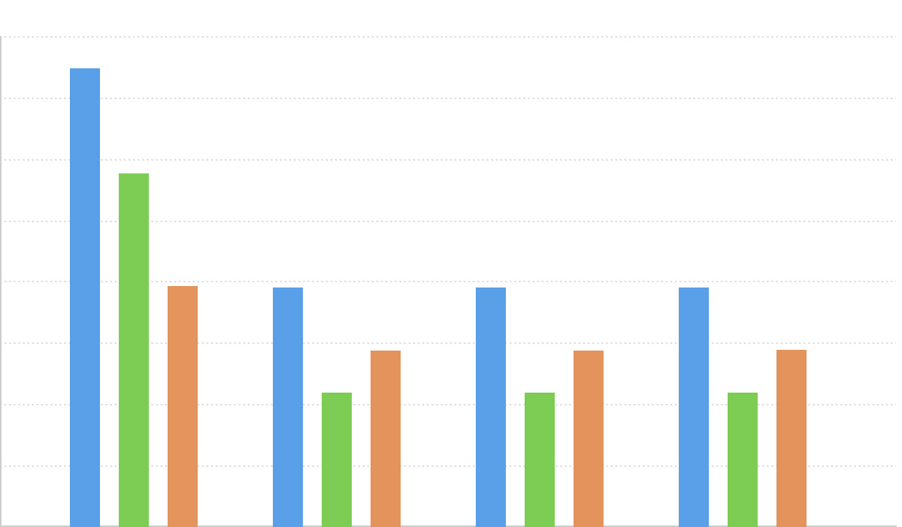

分组柱状图
分组柱状的简介

分组柱状图，又叫聚合柱状图。当使用者需要在同一个轴上显示各个分类下不同的分组时，需要用到分组柱状图。
跟柱状图类似，使用柱子的高度来映射和对比数据值。每个分组中的柱子使用不同的颜色或者相同颜色不同透明的方式区别各个分类，各个分组之间需要保持间隔。
分组柱状图经常用于不同组间数据的比较，这些组都包含了相同分类的数据。
但是仍需要注意，避免分组中分类过多的情况，分类过多会导致分组中柱子过多过密，非常影响图表可读性。
英文名：Multi-set Bar Chart
分组柱状图的构成

| 图表类型 | 分组柱状图 |
|---|---|
| 适合的数据 | 列表：两个分类数据字段、一个连续数据字段 |
| 功能 | 其中一个分类数据字段作为分组，可以对比相同分组下不同分类的数据大小，也可以对比不同分组下，相同分类的数据大小 |
| 数据与图形的映射 | 其中一个分类数据字段映射到坐标轴的位置用于分组， 另一个分类数据在同一个分组内错开，并通过不同的颜色来区分 连续数据字段映射到矩形的长度 |
| 适合的数据条数 | 分组个数不要超过12个，每个分组下的分类不要超过6个 |
分组柱状图的应用场景
例子 1： 对比『我是土豪』游戏公司在 2001、2002、2003 这三年的各类游戏的销量情况。
水平轴显示的是不同的游戏类型，每种游戏类型作为一个柱状图的分组，在每一个分组内对比不同年份的销售数量。
| year（年份） | genre（游戏类型） | sold（销售量） |
|---|---|---|
| 2001 | Sports | 27,500 |
| 2001 | Strategy | 11,500 |
| 2001 | Action | 6,000 |
| ... | ... | ... |
| 2002 | Action | 8,000 |
| 2002 | Shooter | 4,500 |
| 2002 | Other | 1,800 |
| ... | ... | ... |
var data = [
{year:2001,genre:'Sports',sold:27500},
{year:2001,genre:'Strategy',sold:11500},
{year:2001,genre:'Action',sold:6000},
{year:2001,genre:'Shooter',sold:3500},
{year:2001,genre:'Other',sold:1500},
{year:2002,genre:'Sports',sold:29500},
{year:2002,genre:'Strategy',sold:10500},
{year:2002,genre:'Action',sold:8000},
{year:2002,genre:'Shooter',sold:4500},
{year:2002,genre:'Other',sold:1800},
{year:2003,genre:'Sports',sold:30500},
{year:2003,genre:'Strategy',sold:12500},
{year:2003,genre:'Action',sold:4000},
{year:2003,genre:'Shooter',sold:6500},
{year:2003,genre:'Other',sold:2000},
];
var Stat = G2.Stat;
var chart = new G2.Chart({
id: 'c1',
width : 800,
height : 400
});
chart.source(data);
chart.col('year',{type:'cat'});
chart.col('sold',{alias: '游戏销售量'});
chart.col('genre',{alias: '游戏类型'});
chart.intervalDodge().position('genre*sold').color('year')
chart.render();
说明：
- genre， 使用横轴的
位置来区分不同的游戏类型 - year,使用
颜色和在同一个游戏类型内的错开的位置，来区分不年份的游戏销售 - sold，使用矩形的
长度对比不同游戏、不同年份的销量
注意：由于所有的矩形都是底部对齐的，所以分组柱状图既可以对比同一个游戏类型在不同年份的销量，又可以对比相同年份不同游戏的销量
例子 2： 对比 Tokyo New York London Berlin 四大城市 2013 年的月均降雨量。
我们以月份为维度进行分组，每个分组内为四大城市的在该月的月均降雨量，即垂直坐标轴表示降雨量的大小。
var data = [
{name: 'Tokyo',data: [49.9, 71.5, 106.4, 129.2, 144.0, 176.0, 135.6, 148.5, 216.4, 194.1, 95.6, 54.4]},
{name: 'New York',data: [83.6, 78.8, 98.5, 93.4, 106.0, 84.5, 105.0, 104.3, 91.2, 83.5, 106.6, 92.3]},
{name: 'London',data: [48.9, 38.8, 39.3, 41.4, 47.0, 48.3, 59.0, 59.6, 52.4, 65.2, 59.3, 51.2]},
{name: 'Berlin',data: [42.4, 33.2, 34.5, 39.7, 52.6, 75.5, 57.4, 60.4, 47.6, 39.1, 46.8, 51.1]}
];
for(var i=0; i < data.length; i++) {
var item = data[i];
var datas = item.data;
var months = ['Jan.','Feb.','Mar.','Apr.','May','Jun.','Jul.','Aug.','Sep.','Oct.','Nov.','Dec.'];
for(var j=0; j < datas.length; j++) {
item[months[j]] = datas[j];
}
data[i] = item;
}
var Stat = G2.Stat;
var Frame = G2.Frame;
var frame = new Frame(data);
frame = Frame.combinColumns(frame,['Jan.','Feb.','Mar.','Apr.','May','Jun.','Jul.','Aug.','Sep.','Oct.','Nov.','Dec.'],'月均降雨量','月份','name');
var chart = new G2.Chart({
id: 'c2',
width : 800,
height : 400,
plotCfg: {
margin: [20,90,60,60]
}
});
chart.source(frame);
chart.col('name',{alias: '城市'});
chart.intervalDodge().position('月份*月均降雨量').color('name');
chart.render();
说明：
- 月份，使用横轴的
位置区分不同的月份 - 城市，在不同的月份内部，错开一定的
位置，同时使用不同的颜色区分不同的城市 - 月均降雨量，使用矩形的
长度，对比不同月份、不同区域的降雨量
分组柱状图和其他图表的对比
分组柱状图和一般柱状图
- 分组柱状图可以增加一个维度，用于对比一组数据内不同分类的数据值大小，可以表示3个数据字段（维度）的数据，而一般柱状图只能表示2个数据字段（维度）
分组柱状图和层叠柱状图
- 分组柱状图，可以对比同一个分组内部不同分类的数据大小，也可以对比不同分组内相同分类的数据大小
- 层叠柱状图，可以对比同一个分组内部不同分类的数据大小，但不适合对比不同分组内相同分类的数据大小